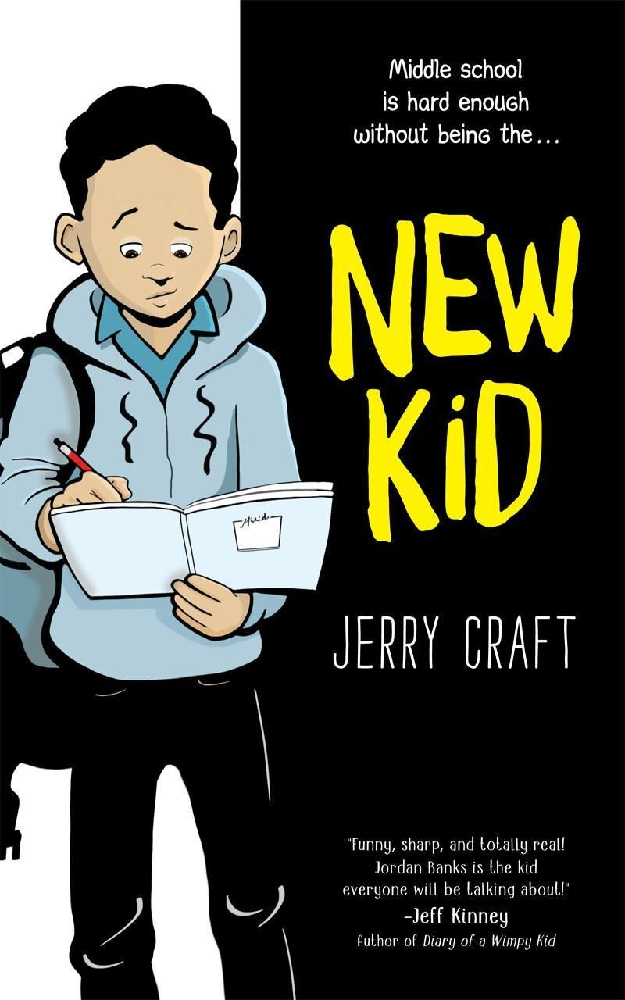
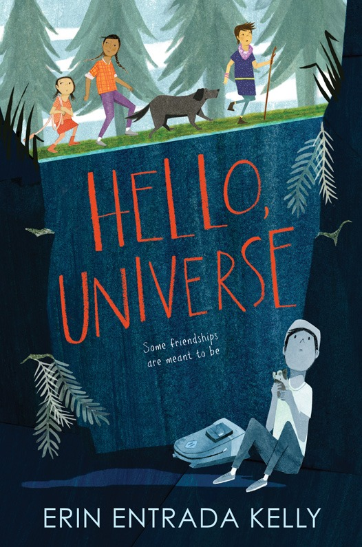
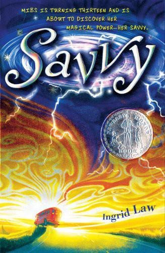
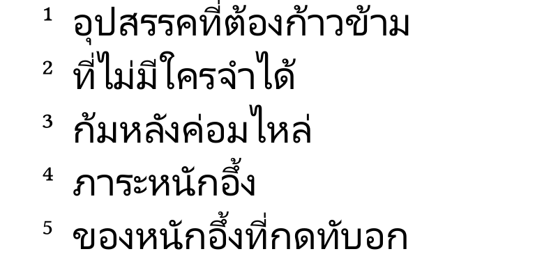
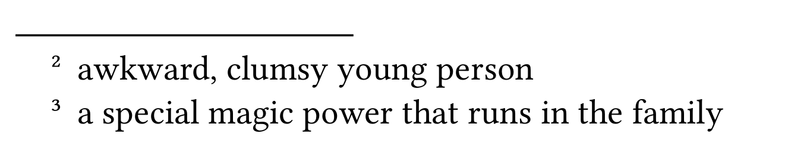
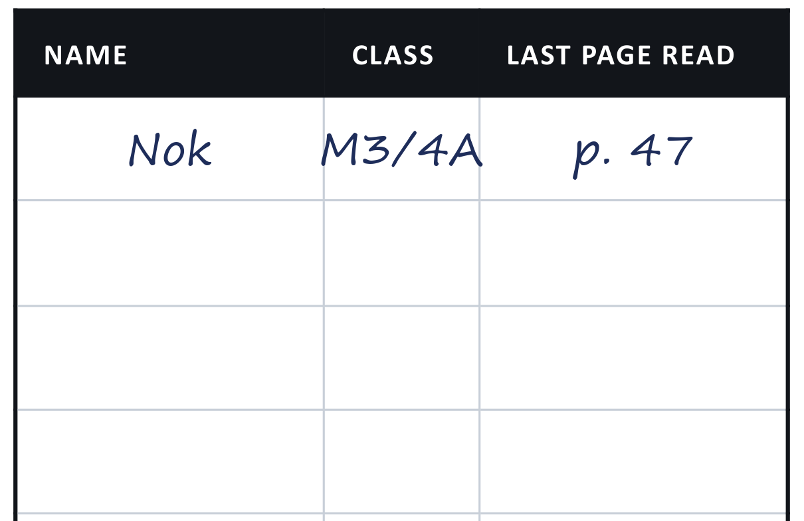

Thailand
OECD average
OECD — the Organisation for Economic Co-operation and Development: 38 of the world's richest countries. Its average is the line every country is measured against.
The rewards are very large
OECD: down 35 points in 13 years — 2 school years.
Thailand: down 49 — 2½ school years.
Thailand
OECD average
OECD — the Organisation for Economic Co-operation and Development: 38 of the world's richest countries. Its average is the line every country is measured against.
Source: OECD, PISA 2025 Results (Volume I), published 8 September 2026.
Thailand's 13-point rise is real — and only gets back to 2018.
3½ years
of schooling behind the OECD average — the OECD counts 20 points as one school year
59%
of Thai 15-year-olds are below the baseline (PISA Level 2) — where reading starts to work as a tool for learning
≈0%
reach the top levels (PISA 5–6): reading that lets you judge what a source is really saying. The OECD average is 6%
A degree is the ticket. The reading sets the price. Among graduates, 67% of the strongly skilled are in the best-paid 40%, against 32% of the weakly skilled. Admissions essays are reading tests too.
Sources: OECD, PISA 2025 (Thailand country note); OECD, Education at a Glance 2026, Indicator A4.
The loop. Good readers read more, so they get better. Weak readers stop, so the gap grows. It runs for years — and it can be broken.
Interest first. Nobody starts reading because it is good for them. You start because something in the book sounds like you.
Finish something. A finished book is evidence that you are a reader. Short chapters, pictures, a series you already like — all of it counts.
Minutes a day, words a year
282,000
words a year, at 4.6 minutes a day — the median child
1,823,000
words a year, at 21 minutes a day — the top tenth
Sixteen more minutes a day. Six and a half times the words.
Habit against background
540
keen reader, poorest families
491
reluctant reader, richest families
The habit beat the background by 49 points.
Sources: Anderson, Wilson & Fielding (1988); OECD, Reading for Change (2002), p.121.
A whole lesson, the same day every week, until the end of the year.
A book chosen for you — at your reading level, so the page is work but not a wall.
No test. Nobody sets questions on the book, and nobody collects the book.

Jerry Craft · graphic novel
A2 Newbery Medal 2020 Coretta Scott King 2020
The first graphic novel ever to win the Newbery Medal.
The prize for the best children's book published in the United States.
Jordan is twelve and wants to draw comics. Instead he is sent to a private school where almost everyone is white. He is one of the very few Black students, and nothing said to him is shocking — the small things wear him down.
Why you'll like it. This story is about the emotions and fear you experience when you are the “new kid” in a place where everyone is different to you: something everyone in this class has experienced. It also shows you how to survive being different.

Erin Entrada Kelly · novel, 42 short chapters
B1 Newbery Medal 2018
The 2018 winner of that same prize.
America's best children's book of the year, chosen by the same librarians.
Four children in one Philadelphia neighbourhood, one summer day. Virgil is shy, Valencia is deaf, Kaori says she is psychic, and Chet makes everyone's life harder. Then a prank sends Virgil's backpack to the bottom of a well.
Why you'll like it. This is a story about bullying — the ordinary kind, in an ordinary week, aimed at a boy who has done nothing. Virgil is the quiet one; Chet makes his day harder on purpose. Four children, and one of them has to decide whether to say something.

Ingrid Law · novel
B2 Newbery Honor 2009
A Newbery Honor book.
Runner-up for that same prize — one of only a few chosen each year.
Every Beaumont child gets a savvy at thirteen: a power that belongs to that child alone. Mibs is two days short of it and has no idea what hers will be. Then her father is badly hurt in a crash far away, and she decides her savvy must be the power to wake him.
Why you'll like it. Mibs is the youngest, so nobody tells her anything — and the whole book is what she does about that. If you have ever been the last person to find out, you will recognise every page.

B1
A small number after a word — …a sack4 of disappointment … like an anvil5 — sends you to the bottom of the page.

B2
The same mechanism, defined in easy English: 2 awkward, clumsy young person; 3 a special magic power that runs in the family.
Screenshots: Hello, Universe p.1, Savvy p.2. The A2 book is a graphic novel, so it needs none.
Would you rather bring your own? Good. Bring it — in English — and I look at it before you start.
It has to be a book. A novel, a graphic novel, a biography. Not a textbook, not a magazine, not a website.
It has to be English. Your own taste, in the language we are working in.
It has to fit you. If you want a dictionary on every page, it is not the right book yet.
35 minutes · silent
Phone away, face down. No talking, no sharing, no dictionary — keep going and let the sentence come round.
If a page is still a wall after five minutes, tell me. A book at the wrong level is my problem to fix, not yours.
10 minutes · writing
One paragraph in your notebook. What did you enjoy, or not enjoy? What would you tell a friend about it?
It is not a book report. Nobody is marking your spelling. Say what you actually thought.
The 45 minutes is not the point. What it teaches you to do alone is.

One line, every time you read
Your name and your class, so the book can be traced back to you.
The last page you read — the number only. p. 47 is enough.
The grid is the first page of your book. Use it up, then carry on in your notebook.
Screenshot: page one of the A2 book, with one row filled in as an example.
In the book — one line on the grid at the front, every time you read.
On the class site — fill in the reading form after your session. It is the site you already use for your grades, and the login is the same.
Both, every week. The book log travels with the book; the form is how I see your reading when the book is at home.
Your book is on the desk. Open it and read the first page — that is the programme, and it starts now.